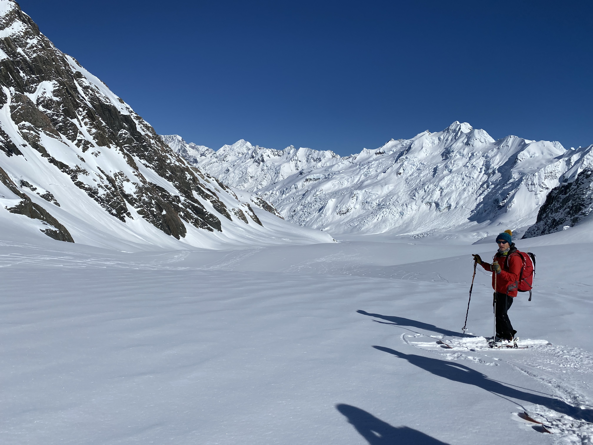

The route had no formal name when I first heard about it — just a description that made my stomach drop. Ride from the Marlborough Sounds to the deep south, unsupported, via the spine of the South Island. Sounds to Sounds. Five hundred kilometres of gravel roads, mountain passes, river valleys, and the kind of silence that only exists when you are far enough from any sealed road that cars have become an abstraction.
I had been riding for a year before I started taking the idea seriously. The preparation took longer than the trip itself — three months of route planning, bag testing, food drop logistics. The South Island has towns, but they are spread wide. You can go a day and a half between proper resupply points in some sections, and that changes how you think about every gram you carry.

Duffers Saddle was where the trip became real. I had been riding for four days when I hit the climb — a sustained gravel grind that gains nearly eight hundred metres, the kind of grade where your cadence drops to something barely measurable. The view from the top was the whole Marlborough Sounds laid out below, the sea glittering between bush-covered ridges. I sat there for close to an hour. I was not tired. I just did not want to leave.
[Your story continues here — write about the next stages of the journey, the landscapes that surprised you, the days that tested you, the moments that made it worth it. You have space for approximately 400 more words in this section.]
“The South Island rewards patience. The passes don’t give themselves up easily — each one has a personality, and each one asks something of you.”
The Clarence in particular is unlike anything else in the country: a braided river corridor that demands multiple crossings, reads the landscape like an unfinished sentence, and then opens without warning into wide shingle flats that go on for kilometres. You have to commit to the crossings. There is no other way through.
I finished in Queenstown because the logic of the south pulls everything toward the lakes and the mountains. I was saddle-sore, sun-burnt on one side of my face, and completely unwilling to stop. That is the contradiction of bikepacking — you spend weeks looking forward to a bed and a hot shower, and then on the last day, you want to turn around and do it again.